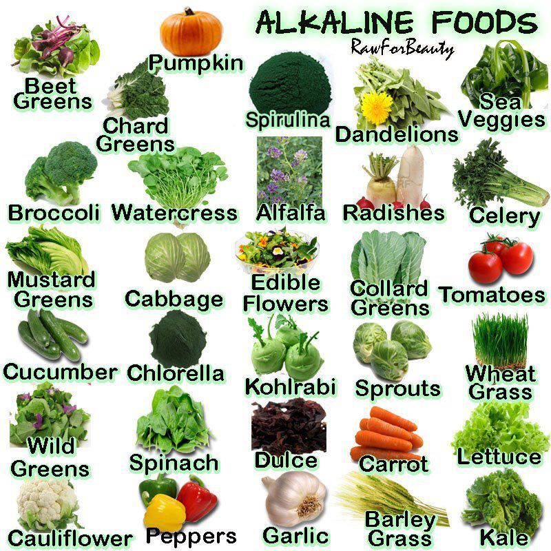

Understanding how to combine & sequence food for energy is a key pillar of health.


The goal of TYSO yoga is to harness the natural energy of the universe, or Ch'i; cultivating this primal life-force within the body, as did the ancient alchemists, through 3 areas:
The TYSO Yoga method was designed specifically with a focus on longevity and internal endurance.
Live YOUR Chi
-Anthony
TYSO yoga is, for me, the most
grounded of the yoga disciplines.
The practice incites a bottom-up approach
in which lofty poses form aesthetic terraces
linked by scaffolds of supportive
& guiding Vinyasas.
In a sense, TYSO is to western Hatha Yoga what
Hamiltonian physics is to Newton’s fundamental principles: TYSO is ‘the Force’ in action.
Within & through these dimensions
focal points are created to serve as both
the foundation & pathway to an ever increasing corporeal & spiritual illumination.
-Paul Auerbach (Yoga teacher)